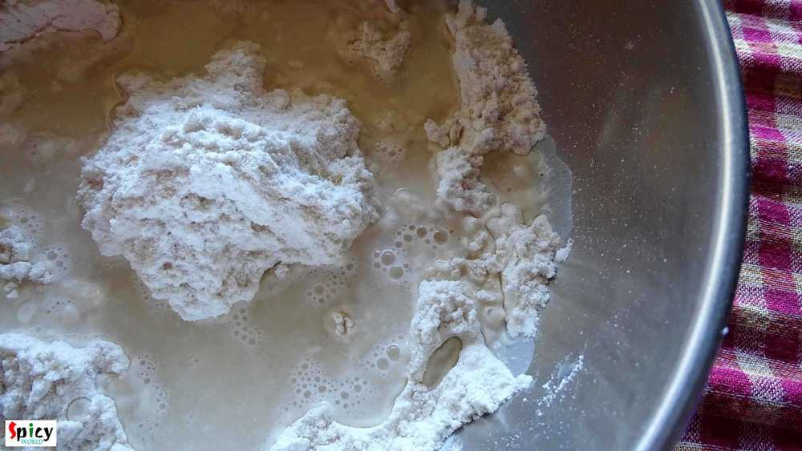
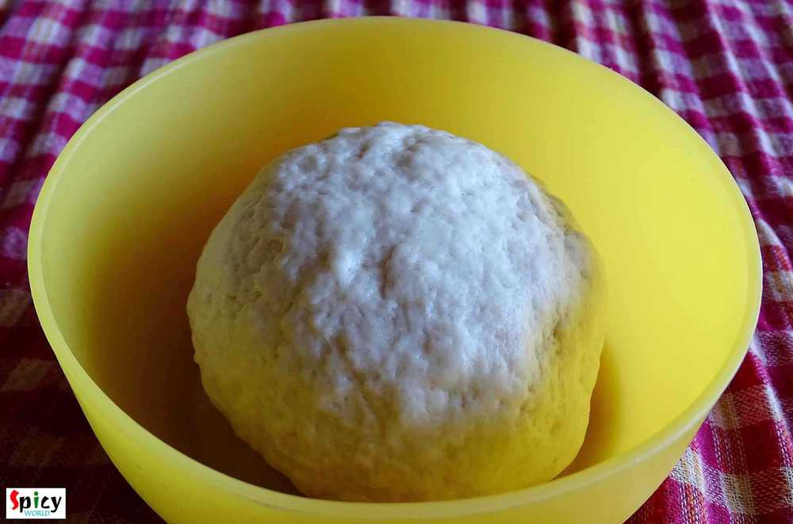
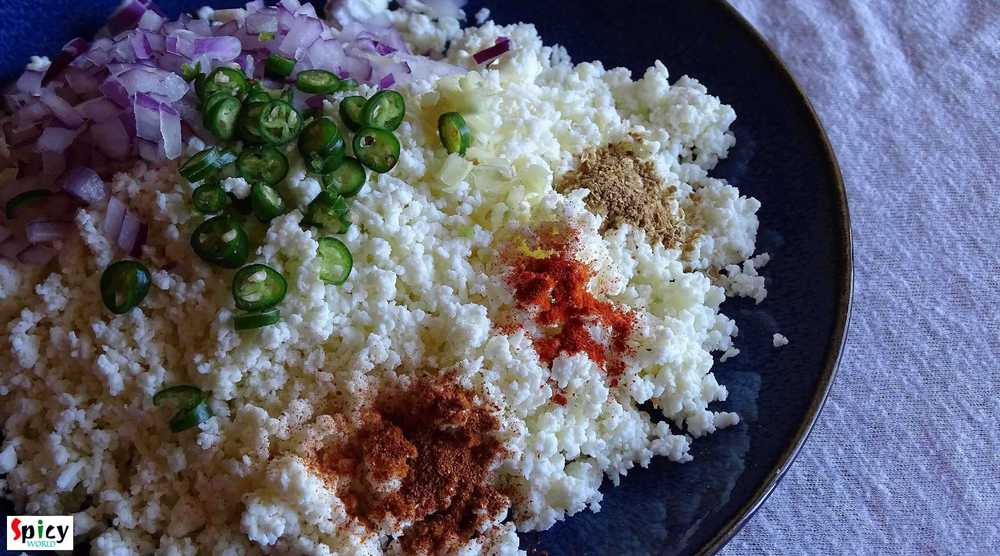
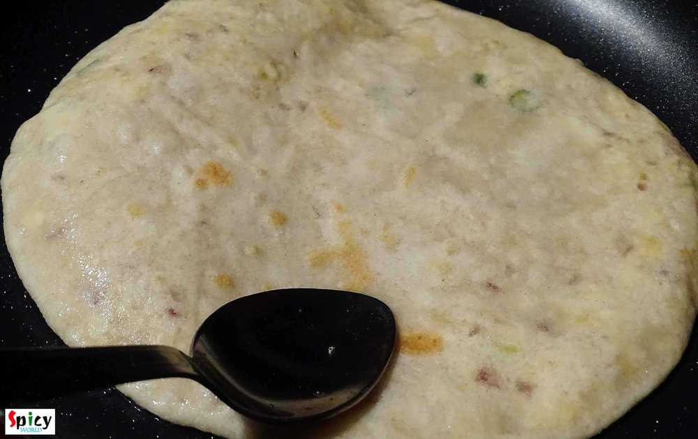

Simple and Easy Recipes
Paneer Paratha / Cottage Cheese Bread
© 2016 Spicy World, Published on: Dec 29, 2015
Everybody loves paneer, right? Specially when there is a spicy paneer stuffing inside a paratha, I am always up for it. This was my first try on 'paneer paratha' and I just nailed it. Believe me it is much easier than 'aloo paratha'. I made those in breakfast with 'chana masala' and the combo was really gorgeous. Parathas came out perfectly crispy and soft. The taste was unforgettable, we enjoyed them a lot. I'm damn sure that 'he' will request me to make them soon again.

Ingredients
- 1 cup of crumbled / grated paneer.
- 4 Teaspoons of chopped onion.
- 2 chopped green chilies.
- 1 Teaspoon of chopped ginger.
- half Teaspoon each of (red chilli powder, garam masala powder, coriander powder and amchoor powder).
- Salt.
- 1 cup of flour / maida.
- 4 Teaspoons of wheat flour / atta.
- 2-3 Teaspoons of oil for the dough.
- Warm water.
- half cup of oil for frying parthas.

Steps
Put the flour and whole wheat flour in a mixing bowl.
Add pinch of salt. Mix them.
Then add 2-3 Teaspoons of oil / ghee.
Mix it very well with the flour.
Now gradually add warm water and mix with the flour.
Do not add all the water at a time.
Make a soft dough and knead it well for 5 minutes.
Apply little oil on the surface and cover it with a damp cloth for 15 minutes.
Lets make the stuffing.
Add onion, ginger, green chilies and all the powder to grated paneer.
Mix it.
Add salt to the stuffing and again mix it well.
Check the seasoning.
Take little portion from the dough, make a ball and dip it in dry flour.
Flatten it to 2 inches.
Apply little oil on one side and sprinkle some dry flour.
Put 1-2 Teaspoons of stuffing in the center.
Then seal the edges properly, gently press it with your plam and flatten it to 3 inches with the help of rolling pin.
Place the paratha in a hot tawa/pan for 1 minute.
Tawa should be hot not warm.
Flip it and apply 1 Teaspoon oil on the surface.
Keep it for 2 minutes.
Again flip it and apply 1 Teaspoon oil on the other side.
Fry it for another 2 minutes.
Then remove it from the pan and make rest of the parathas.
Your paneer paratha is ready ...
Enjoy this hot with some pickle and Chana Masala ...
")